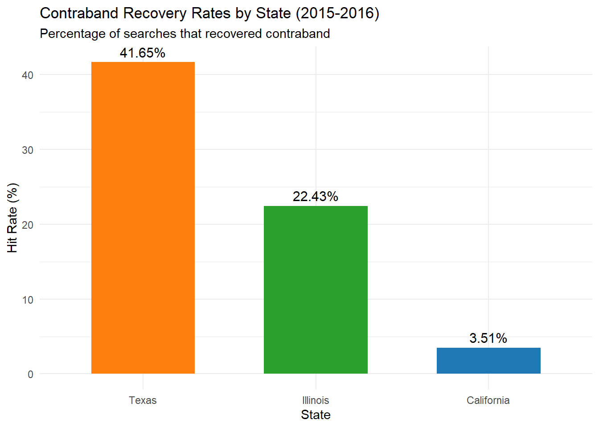

. jkm— title: “Police Search Practices Across Three States” description: | SQL analysis comparing search rates and contraband recovery in California, Texas, and Illinois traffic stops author: Eli Della Bitta date: December 1, 2025 format: html: warning: false message: false code-fold: true —
Introduction
My analysis examines traffic stop data from the Stanford Open Policing Project to compare police search practices across three states: California, Texas, and Illinois. I focused on two key questions: How often do police search drivers during traffic stops, and how successful are those searches at finding contraband? Understanding these patterns matters because differences in search practices can show us possible variance in enforcement priorities and raise questions about fairness in policing.
Connecting to the Database
library(DBI)library(RMariaDB)
Warning: package 'RMariaDB' was built under R version 4.5.2
library(tidyverse)
Warning: package 'tidyverse' was built under R version 4.5.2
Warning: package 'lubridate' was built under R version 4.5.2
── Attaching core tidyverse packages ──────────────────────── tidyverse 2.0.0 ──
✔ dplyr 1.1.4 ✔ readr 2.1.5
✔ forcats 1.0.0 ✔ stringr 1.5.2
✔ ggplot2 4.0.0 ✔ tibble 3.3.0
✔ lubridate 1.9.4 ✔ tidyr 1.3.1
✔ purrr 1.1.0
── Conflicts ────────────────────────────────────────── tidyverse_conflicts() ──
✖ dplyr::filter() masks stats::filter()
✖ dplyr::lag() masks stats::lag()
ℹ Use the conflicted package (<http://conflicted.r-lib.org/>) to force all conflicts to become errors
To understand how often police conduct searches during traffic stops, I will retrieve data from all three states for the years 2015-2016.
-- Combine search rate data from three states-- For each state and year, calculate total stops, searches, and search rate percentageSELECT'California'AS state,YEAR(date) AS stop_year,COUNT(*) AS total_stops,SUM(CASEWHEN search_conducted =TRUETHEN1ELSE0END) AS searches_conducted,ROUND(100.0*SUM(CASEWHEN search_conducted =TRUETHEN1ELSE0END) /COUNT(*), 2) AS search_rate_percentFROM ca_statewide_2023_01_26WHEREYEAR(date) BETWEEN2015AND2016GROUPBY stop_yearUNIONALLSELECT'Texas'AS state,YEAR(date) AS stop_year,COUNT(*) AS total_stops,SUM(CASEWHEN search_conducted =TRUETHEN1ELSE0END) AS searches_conducted,ROUND(100.0*SUM(CASEWHEN search_conducted =TRUETHEN1ELSE0END) /COUNT(*), 2) AS search_rate_percentFROM tx_statewide_2020_04_01WHEREYEAR(date) BETWEEN2015AND2016GROUPBY stop_yearUNIONALLSELECT'Illinois'AS state,YEAR(date) AS stop_year,COUNT(*) AS total_stops,SUM(CASEWHEN search_conducted =TRUETHEN1ELSE0END) AS searches_conducted,ROUND(100.0*SUM(CASEWHEN search_conducted =TRUETHEN1ELSE0END) /COUNT(*), 2) AS search_rate_percentFROM il_statewide_2020_04_01WHEREYEAR(date) BETWEEN2015AND2016GROUPBY stop_yearORDERBY state, stop_year;
Visualization: Search Rates Over Time
# Create line plot showing search rate trends# Each state gets its own colored line showing search rates across 2015-2016ggplot(search_rates, aes(x = stop_year, y = search_rate_percent, color = state, group = state)) +geom_line(linewidth =1.2) +geom_point(size =2.5) +labs(title ="Police Search Rates During Traffic Stops (2015-2016)",subtitle ="Comparison across California, Texas, and Illinois",x ="Year",y ="Search Rate (%)",color ="State" ) +theme_minimal() +scale_color_manual(values =c("California"="#1f77b4", "Texas"="#ff7f0e", "Illinois"="#2ca02c"))
Don't know how to automatically pick scale for object of type <integer64>.
Defaulting to continuous.
What I See: The line chart ends up showing us very clear differences in search frequency across the three states. Illinois searches most frequently at around 4.5% of all traffic stops, California falls in the middle at approximately 3.2%, and Texas conducts searches in only about 1% of stops. All three states show stable patterns across both years, suggesting these differences reflect consistent state-level policies rather than year-to-year fluctuations. Illinois officers search drivers roughly 4.5 times more often than Texas officers during traffic stops.
Contraband Recovery Analysis
Search frequency alone doesn’t tell the full story. To further look at effectiveness, I examine “hit rates” - the percentage of searches that actually recover contraband. Higher hit rates indicate more targeted, selective searching, while lower rates suggest searches may be conducted with less concrete justification.
-- Calculate contraband recovery rates (hit rates) for each state-- Hit rate = (searches finding contraband / total searches) * 100SELECT'California'AS state,SUM(CASEWHEN search_conducted =TRUETHEN1ELSE0END) AS searches_conducted,SUM(CASEWHEN contraband_found =TRUETHEN1ELSE0END) AS contraband_found,ROUND(100.0*SUM(CASEWHEN contraband_found =TRUETHEN1ELSE0END) /SUM(CASEWHEN search_conducted =TRUETHEN1ELSE0END), 2) AS hit_rate_percentFROM ca_statewide_2023_01_26WHEREYEAR(date) BETWEEN2015AND2016UNIONALLSELECT'Texas'AS state,SUM(CASEWHEN search_conducted =TRUETHEN1ELSE0END) AS searches_conducted,SUM(CASEWHEN contraband_found =TRUETHEN1ELSE0END) AS contraband_found,ROUND(100.0*SUM(CASEWHEN contraband_found =TRUETHEN1ELSE0END) /SUM(CASEWHEN search_conducted =TRUETHEN1ELSE0END), 2) AS hit_rate_percentFROM tx_statewide_2020_04_01WHEREYEAR(date) BETWEEN2015AND2016UNIONALLSELECT'Illinois'AS state,SUM(CASEWHEN search_conducted =TRUETHEN1ELSE0END) AS searches_conducted,SUM(CASEWHEN contraband_found =TRUETHEN1ELSE0END) AS contraband_found,ROUND(100.0*SUM(CASEWHEN contraband_found =TRUETHEN1ELSE0END) /SUM(CASEWHEN search_conducted =TRUETHEN1ELSE0END), 2) AS hit_rate_percentFROM il_statewide_2020_04_01WHEREYEAR(date) BETWEEN2015AND2016;
Visualization: Contraband Recovery Rates
# Create bar plot showing hit rates# Bars ordered from highest to lowest hit rateggplot(hit_rates, aes(x =reorder(state, -hit_rate_percent), y = hit_rate_percent, fill = state)) +geom_col(width =0.6) +geom_text(aes(label =paste0(hit_rate_percent, "%")), vjust =-0.5, size =4) +labs(title ="Contraband Recovery Rates by State (2015-2016)",subtitle ="Percentage of searches that recovered contraband",x ="State",y ="Hit Rate (%)",fill ="State" ) +theme_minimal() +scale_fill_manual(values =c("California"="#1f77b4", "Texas"="#ff7f0e", "Illinois"="#2ca02c")) +theme(legend.position ="none")

What I See: The bar chart reveals an inverse relationship between search frequency and search success. Texas, which searches least often (1% of stops), has the highest hit rate at 41.65% - meaning contraband is found in over 4 out of 10 searches. Illinois, searching most frequently (4.5% of stops), achieves a moderate 22.43% hit rate. California’s results are particularly noteworthy: despite searching 3.2% of stops, California finds contraband in only 3.51% of searches, meaning 96.5% of California searches turn up nothing. Texas is 12 times more successful per search than California, suggesting different standards for what constitues a search. This could be due to different state laws surrounding drugs and weapons, not only policing policy. ## Summary Comparison
# Combine search rates and hit rates into comprehensive summary table# Calculate average search rate across both years for each statesummary_data <- search_rates |>group_by(state) |>summarise(avg_search_rate =mean(search_rate_percent),total_stops =sum(total_stops) ) |>left_join(hit_rates |>select(state, hit_rate_percent), by ="state") |>arrange(desc(avg_search_rate))knitr::kable(summary_data, digits =2,col.names =c("State", "Avg Search Rate (%)", "Total Stops (2015-2016)", "Hit Rate (%)"),caption ="Summary Statistics: Search Patterns Across Three States")
Summary Statistics: Search Patterns Across Three States
State
Avg Search Rate (%)
Total Stops (2015-2016)
Hit Rate (%)
Illinois
4.46
4192128
22.43
California
3.20
5957628
3.51
Texas
1.57
3577592
41.65
What I See: The table highlights the variation in police search practices. Illinois conducts searches at the highest rate (4.47%) but with a moderate hit rate (22.43%). California searches at an intermediate rate (3.20%) but has an extremely low hit rate (3.51%), meaning nearly 19 out of 20 California searches find nothing. Texas takes a very selective approach, searching only 1.05% of stops but achieving a 41.65% hit rate. The total stops column shows all three states have substantial sample sizes, with California conducting the most traffic stops overall (nearly 6 million), followed by Illinois (4.2 million) and Texas (3.6 million).
Conclusion
This SQL analysis examined traffic stop and search patterns across California, Texas, and Illinois using 2015-2016 data from the Stanford Open Policing Project. The data reveals significant differences in how frequently police conduct searches during traffic stops, with Illinois searching drivers at approximately 4.5 times the rate of Texas. However, higher search rates do not correspond to higher contraband recovery rates. In fact, the relationship is inverse: Texas, which searches least frequently, finds contraband in over 40% of searches, while California, with a moderate search rate, finds contraband in only 3.5% of searches.
California’s extremeley low hit rate could be problematic. When 96.5% of searches yield no contraband, it raises some questions about whether the criteria being used to conduct searches are appropriate. These findings suggest that state-level policies and police department practices significantly impact both search frequency and effectiveness. Understanding this is important for how we view personal liberties in our country.
SQL Keywords Used
Throughout this analysis, I used the following SQL keywords beyond SELECT, FROM, and LIMIT:
WHERE - Filtered data to years 2015-2016 and specific search conditions
GROUP BY - Separated data by year and state for aggregation
COUNT - Counted total stops
SUM - Summed searches conducted and contraband found
CASE WHEN - Created conditional logic for calculating rates
UNION ALL - Combined results from three state tables
ORDER BY - Sorted results by state and year
YEAR() - Extracted year from date fields
ROUND - Rounded percentages to two decimal places
Data Source
Primary Citation: Pierson, E., Simoiu, C., Overgoor, J., Corbett-Davies, S., Jenson, D., Shoemaker, A., Ramachandran, V., Shroff, R., & Goel, S. (2020). A large-scale analysis of racial disparities in police stops across the United States. Nature Human Behaviour, 4(7), 736-745. https://doi.org/10.1038/s41562-020-0858-1
Data Source: Stanford Open Policing Project. https://openpolicing.stanford.edu/
The Stanford Open Policing Project collected and standardized police stop data from law enforcement agencies across the United States, providing one of the most comprehensive datasets on traffic stops and police-civilian interactions. The data includes information on over 200 million traffic stops from state patrol agencies and municipal police departments.
# Disconnect from database to free up resourcesdbDisconnect(con_traffic)